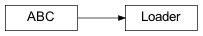
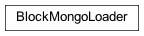

pywqdata
Submodules
Package Contents
Classes
Helper class that provides a standard way to create an ABC using |
|
Helper class that provides a standard way to create an ABC using |
|
Helper class that provides a standard way to create an ABC using |
|
Functions
|
- class pywqdata.Loader(url: str)
Bases:
abc.ABCHelper class that provides a standard way to create an ABC using inheritance.
- static to_dataframe(to_frame, data)
- static json_def_handler(obj)
- async load_bond_info(*, filter: Dict | None = {}, sort: Dict | None = {}, limit: int | None = None, to_frame=True) List[Dict] | pandas.DataFrame
- async load_bond_daily(*, filter: Dict | None = {}, sort: Dict | None = {}, limit: int | None = None, to_frame=True) List[Dict] | pandas.DataFrame
- async load_fund_info(*, filter: Dict | None = {}, sort: Dict | None = {}, limit: int | None = None, to_frame=True) List[Dict] | pandas.DataFrame
- async load_fund_daily(*, filter: Dict | None = {}, sort: Dict | None = {}, limit: int | None = None, to_frame=True) List[Dict] | pandas.DataFrame
- async load_fund_net(*, filter: Dict | None = {}, sort: Dict | None = {}, limit: int | None = None, to_frame=True) List[Dict] | pandas.DataFrame
- async load_index_info(*, filter: Dict | None = {}, sort: Dict | None = {}, limit: int | None = None, to_frame=True) List[Dict] | pandas.DataFrame
- async load_index_daily(*, filter: Dict | None = {}, sort: Dict | None = {}, limit: int | None = None, to_frame=True) List[Dict] | pandas.DataFrame
- async load_stock_info(*, filter: Dict | None = {}, sort: Dict | None = {}, limit: int | None = None, to_frame=True) List[Dict] | pandas.DataFrame
- async load_stock_daily(*, filter: Dict | None = {}, sort: Dict | None = {}, limit: int | None = None, to_frame=True) List[Dict] | pandas.DataFrame
- async load_stock_index(*, filter: Dict | None = {}, sort: Dict | None = {}, limit: int | None = None, to_frame=True) List[Dict] | pandas.DataFrame
- async load_stock_industry(*, filter: Dict | None = {}, sort: Dict | None = {}, limit: int | None = None, to_frame=True) List[Dict] | pandas.DataFrame
- async load_stock_industry_daily(*, filter: Dict | None = {}, sort: Dict | None = {}, limit: int | None = None, to_frame=True) List[Dict] | pandas.DataFrame
- async load_stock_industry_detail(*, filter: Dict | None = {}, sort: Dict | None = {}, limit: int | None = None, to_frame=True) List[Dict] | pandas.DataFrame
- async load_stock_concept(*, filter: Dict | None = {}, sort: Dict | None = {}, limit: int | None = None, to_frame=True) List[Dict] | pandas.DataFrame
- async load_stock_concept_daily(*, filter: Dict | None = {}, sort: Dict | None = {}, limit: int | None = None, to_frame=True) List[Dict] | pandas.DataFrame
- async load_stock_concept_detail(*, filter: Dict | None = {}, sort: Dict | None = {}, limit: int | None = None, to_frame=True) List[Dict] | pandas.DataFrame
- async load_stock_yjbb(*, filter: Dict | None = {}, sort: Dict | None = {}, limit: int | None = None, to_frame=True) List[Dict] | pandas.DataFrame
- async load_stock_margin(*, filter: Dict | None = {}, sort: Dict | None = {}, limit: int | None = None, to_frame=True) List[Dict] | pandas.DataFrame
- class pywqdata.MongoLoader(url: str)
Bases:
pywqdata.loader.Loader
Helper class that provides a standard way to create an ABC using inheritance.
- async load_bond_info(*, filter: Dict | None = {}, sort: Dict | None = {}, limit: int | None = None, to_frame=True) List[Dict] | pandas.DataFrame
- async load_bond_daily(*, filter: Dict | None = {}, sort: Dict | None = {}, limit: int | None = None, to_frame=True) List[Dict] | pandas.DataFrame
- async load_fund_info(*, filter: Dict | None = {}, sort: Dict | None = {}, limit: int | None = None, to_frame=True) List[Dict] | pandas.DataFrame
- async load_fund_daily(*, filter: Dict | None = {}, sort: Dict | None = {}, limit: int | None = None, to_frame=True) List[Dict] | pandas.DataFrame
- async load_fund_net(*, filter: Dict | None = {}, sort: Dict | None = {}, limit: int | None = None, to_frame=True) List[Dict] | pandas.DataFrame
- async load_index_info(*, filter: Dict | None = {}, sort: Dict | None = {}, limit: int | None = None, to_frame=True) List[Dict] | pandas.DataFrame
- async load_index_daily(*, filter: Dict | None = {}, sort: Dict | None = {}, limit: int | None = None, to_frame=True) List[Dict] | pandas.DataFrame
- async load_stock_info(*, filter: Dict | None = {}, sort: Dict | None = {}, limit: int | None = None, to_frame=True) List[Dict] | pandas.DataFrame
- async load_stock_daily(*, filter: Dict | None = {}, sort: Dict | None = {}, limit: int | None = None, to_frame=True) List[Dict] | pandas.DataFrame
- async load_stock_index(*, filter: Dict | None = {}, sort: Dict | None = {}, limit: int | None = None, to_frame=True) List[Dict] | pandas.DataFrame
- async load_stock_industry(*, filter: Dict | None = {}, sort: Dict | None = {}, limit: int | None = None, to_frame=True) List[Dict] | pandas.DataFrame
- async load_stock_industry_daily(*, filter: Dict | None = {}, sort: Dict | None = {}, limit: int | None = None, to_frame=True) List[Dict] | pandas.DataFrame
- async load_stock_industry_detail(*, filter: Dict | None = {}, sort: Dict | None = {}, limit: int | None = None, to_frame=True) List[Dict] | pandas.DataFrame
- async load_stock_concept(*, filter: Dict | None = {}, sort: Dict | None = {}, limit: int | None = None, to_frame=True) List[Dict] | pandas.DataFrame
- async load_stock_concept_daily(*, filter: Dict | None = {}, sort: Dict | None = {}, limit: int | None = None, to_frame=True) List[Dict] | pandas.DataFrame
- async load_stock_concept_detail(*, filter: Dict | None = {}, sort: Dict | None = {}, limit: int | None = None, to_frame=True) List[Dict] | pandas.DataFrame
- async load_stock_yjbb(*, filter: Dict | None = {}, sort: Dict | None = {}, limit: int | None = None, to_frame=True) List[Dict] | pandas.DataFrame
- async load_stock_margin(*, filter: Dict | None = {}, sort: Dict | None = {}, limit: int | None = None, to_frame=True) List[Dict] | pandas.DataFrame
- class pywqdata.BlockMongoLoader(url: str)
Bases:
pywqdata.loader.BlockLoaderHelper class that provides a standard way to create an ABC using inheritance.
- static to_dataframe(to_frame, data)
- load_bond_info(*, filter: Dict | None = {}, sort: Dict | None = {}, limit: int | None = None, to_frame=True) List[Dict] | pandas.DataFrame
- load_bond_daily(*, filter: Dict | None = {}, sort: Dict | None = {}, limit: int | None = None, to_frame=True) List[Dict] | pandas.DataFrame
- load_fund_info(*, filter: Dict | None = {}, sort: Dict | None = {}, limit: int | None = None, to_frame=True) List[Dict] | pandas.DataFrame
- load_fund_daily(*, filter: Dict | None = {}, sort: Dict | None = {}, limit: int | None = None, to_frame=True) List[Dict] | pandas.DataFrame
- load_fund_net(*, filter: Dict | None = {}, sort: Dict | None = {}, limit: int | None = None, to_frame=True) List[Dict] | pandas.DataFrame
- load_index_info(*, filter: Dict | None = {}, sort: Dict | None = {}, limit: int | None = None, to_frame=True) List[Dict] | pandas.DataFrame
- load_index_daily(*, filter: Dict | None = {}, sort: Dict | None = {}, limit: int | None = None, to_frame=True) List[Dict] | pandas.DataFrame
- load_stock_info(*, filter: Dict | None = {}, sort: Dict | None = {}, limit: int | None = None, to_frame=True) List[Dict] | pandas.DataFrame
- load_stock_daily(*, filter: Dict | None = {}, sort: Dict | None = {}, limit: int | None = None, to_frame=True) List[Dict] | pandas.DataFrame
- load_stock_index(*, filter: Dict | None = {}, sort: Dict | None = {}, limit: int | None = None, to_frame=True) List[Dict] | pandas.DataFrame
- load_stock_industry(*, filter: Dict | None = {}, sort: Dict | None = {}, limit: int | None = None, to_frame=True) List[Dict] | pandas.DataFrame
- load_stock_industry_daily(*, filter: Dict | None = {}, sort: Dict | None = {}, limit: int | None = None, to_frame=True) List[Dict] | pandas.DataFrame
- load_stock_industry_detail(*, filter: Dict | None = {}, sort: Dict | None = {}, limit: int | None = None, to_frame=True) List[Dict] | pandas.DataFrame
- load_stock_concept(*, filter: Dict | None = {}, sort: Dict | None = {}, limit: int | None = None, to_frame=True) List[Dict] | pandas.DataFrame
- load_stock_concept_daily(*, filter: Dict | None = {}, sort: Dict | None = {}, limit: int | None = None, to_frame=True) List[Dict] | pandas.DataFrame
- load_stock_concept_detail(*, filter: Dict | None = {}, sort: Dict | None = {}, limit: int | None = None, to_frame=True) List[Dict] | pandas.DataFrame
- load_stock_yjbb(*, filter: Dict | None = {}, sort: Dict | None = {}, limit: int | None = None, to_frame=True) List[Dict] | pandas.DataFrame
- load_stock_margin(*, filter: Dict | None = {}, sort: Dict | None = {}, limit: int | None = None, to_frame=True) List[Dict] | pandas.DataFrame
- class pywqdata.MySync(dest: Dest, funcs: List[int] | None = None)
- async sync(skip_basic=False, task_count=4, split_count=5)
- shutdown()
- class pywqdata.MyBlockSync(dest: Dest, funcs: List[int] | None = None)
- sync(skip_basic=False, task_count=4, split_count=5)
- shutdown()
- class pywqdata.Dest(*, file: str | None = None, mongo: str | None = None, mysql: str | None = None, clickhouse: str | None = None)
- to_list() List[Tuple] | None
- class pywqdata.Funcs
- TradeDate = 1
- IndexInfo = 2
- IndexDaily = 3
- StockInfo = 4
- StockBar = 5
- StockIndex = 6
- StockIndustry = 7
- StockIndustryDetail = 8
- StockIndustryBar = (9,)
- StockConcept = (10,)
- StockConceptDetail = 11
- StockConceptBar = (12,)
- StockYJBB = 13
- StockMargin = 14
- FundInfo = 15
- FundNet = 16
- FundBar = 17
- BondInfo = 18
- BondBar = 19
- pywqdata.get_loader(typ: str, url: str, block: bool = False) loader.Loader | None